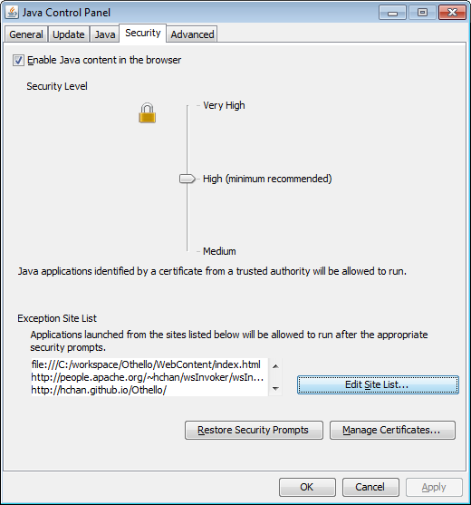

Demo Teacher Application
I am an instructor for a course @ BCIT, and this Git project includes a demo of my work via Java Web Start. This project will help manage an inventory of teachers. Admittedly, I was going to create a relationship of teachers and students but never got around to it - spelt work in progress.
Before you launch my Web Start link, note that this code was self-signed, meaning that Web Start will not work per the default settings. One soln, would be to get this signed by certificate authority, but that is still a work in progress. The current soln is for the end user to change their Java Settings. In Windows, click, Start->Configure Java->Security->Edit Site List and add the following URL:
For reference, see: Setting the Security levels through the Java Control Panel

Click here to launch my Teacher web start application